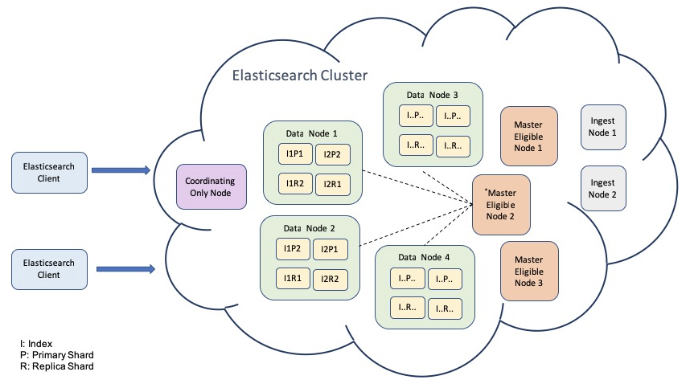

Ch01-Elasticsearch 介绍
August 1, 2021
Elasticsearch 是一个基于 Lucene 的搜索服务器。它提供了一个分布式多用户能力的全文搜索引擎，基于 RESTful web 接口。Elasticsearch 是用 Java 开发的，并作为 Apache 许可条款下的开放源码发布，是当前流行的企业级搜索引擎。设计用于云计算中，能够达到实时搜索，稳定，可靠，快速，安装使用方便。
1. 基本信息 #
| 条目 | 说明 |
|---|---|
| 官网 | https://www.elastic.co |
| 下载地址 | https://hadoop.apache.org/releases.html |
2. 架构介绍 #
ElasticSearch 节点类型分为 Master（主节点）和 DataNode（数据节点）。每个 DataNode 上面包含若干个分片，分片（Shard）分为 Primary Shard（主分片）和 Replica Shard（副分片）。分片（Shard）可以支撑海量数据，解决单机磁盘容量问题，副本（Replica）可以保证数据不丢失。

2.1 术语介绍 #
| 类型 | 说明 |
|---|---|
| Cluster | 包含若干个 Node。 |
| Node | 是一个 Elasticsearch 的实例，本质上是一个 Java 进程。每个节点上面都保存着集群的状态信息，包括所有的节点信息、所有的索引和相关的 Mapping 于 Setting 信息和分片的路由信息等。节点按照角色可以划分为 MasterNode、DataNode、IngestNode 等。 |
| Shard | 是 Lucene 的一个实例，Shard 分为 Primary Shard 和 Replica Shard，一般情况，一个 Primary Shard 有多个 Replica Shard。Primary Shard 负责处理写入请求和存储数据，Replica Shard 只负责存储数据，是 Primary Shard 的拷贝，Index 会存储在具体的某个 Primary Shard 和 Replica Shard 上。 |
| Index | 类似于 MySQL 的 Table。 |
| Document | 类似于 MySQL 的 Row。 |
| Field | 类似于 MySQL 的 Column。 |
| Mapping | 类似于 MySQL 的 Schema。 |
| DSL | 类似于 MySQL 的 SQL。 |
2.2 节点介绍 #
| 类型 | 配置 | 说明 |
|---|---|---|
| MasterNode | node.master = true | 管理索引（创建/删除/分配）；维护元数据；管理集群节点状态；不负责数据写入和查询。 |
| DataNode | node.data = true | 数据写入；数据检索。 |
| IngestNode | node.ingest = true | 执行预处理管道，不负责数据和集群相关事宜。 |
| CoordinatingNode | all node | 负责接收客户端的请求，将请求路由到到合适的节点，并将结果汇集到一起。事实上所有的节点都是 CoordinatingNode，但是当其他节点类型设置为 false 的时候，该节点才会扮演单纯的 CoordinatingNode。 |
3. 倒排索引 #
正排索引指的是从文档 id 到文档内容、单词的关联关系。例如每本书的目录，通过目录可以很快找到某个标题的具体内容在书中的那一页。而倒排索引指的文档内容或者单词到文档 id 的关联关系。还是以书的例子，倒排索引指的是从具体内容到文章标题的索引。
4. 易混概念 #
- 数据分片技术是指分布式存储系统按照一定的规则将数据存储到对应的存储节点中，或者到对应的存储节点中获取想要的数据。
- 数据复制技术是指将数据进行备份，使得多个节点都存储该数据，提高系统可用性和可靠性。